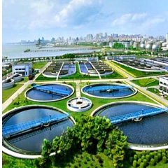
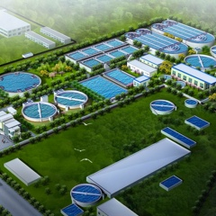
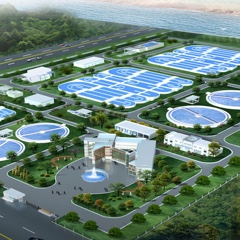
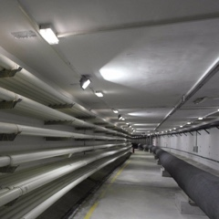
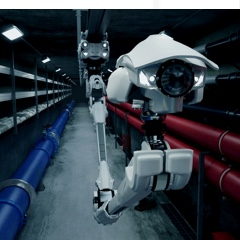
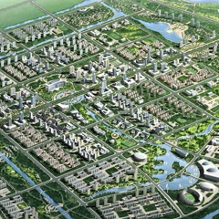

-

污水厂智能运营服务+解决方案
针对目前我国大型水务公司或政府部 门需要同时监管多个污水厂运营的需求
-

水务工程 服务 + 解决方案
市政污水处理及回用技术/工业废水处理及回用技术/固废处理资源化技术/环境场地评价与修复
-

智慧供水 服务 + 解决方案
针对客户对智慧供水的建设需求，提供从整体规划咨询、可行性研究、软件产品选型
-

智慧排水 服务 + 解决方案
数字化建设总体规划咨询服务/成都市中心城区排水管网数字化管理系统规划/广州市番禺区排水数字化管理系统
-

智慧环保 服务 + 解决方案
雾霾从何而来？什么时候到？里面包含什么？浓度有多少？这些问题不仅困扰环保管理部门，也日益为普通百姓
-

生态环境 规划 + 设计
生态环境规划设计/城市环境总体规划/生态市（县）建设规划/流域（区域）生态环境综合规划/城乡总体规划